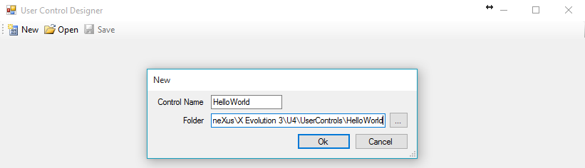

Hello World User Control
The purpose of this document is to explain how to create a simple "Hello World" user control. After completing this step by step sample, you will have a new user control named "Hello World" in your toolbox.
What does this control do? After dragging this user control to your web form, it will display a "Hello World" message in your GeneXus application with the color and font that you will be able to set using the control properties.
By using these controls you will be able to create Menus, Treeviews, Silverlight controls and so on.
"Hello world" User Control Definition
The control will do the following:
- display a "Hello world" message
- allow the programmer to set the:
- color of the "Hello world" text
- font of the "Hello world" text
- size of the "Hello world" text
Creating the Control
1) Execute the UserControlEditor.exe (User Control Editor), which is under the GeneXus installation directory, and press the New button. Enter the name of the user control and the folder location. All User Controls must be placed under the UserControls directory, which is also under the GeneXus installation directory.

2) Under the Control Definition tab, complete the Icon (used in toolbox) property. In this case, complete it with an Icon named HelloWorldIcon.ico which has to be placed under the HelloWorld folder that you have created in step 1.

3) As stated above, the control must have 3 properties that will allow you to set the Hello World: text, font and size. Consequently, under the Properties tab you have to create 3 properties, for example:
- FontFace
- Type: Combo
- Default: Verdana
- Values: Arial=Arial,Verdana=Verdana,Comic Sans MS=Comic Sans MS
- FontColor
- Type: Color
- Default: #000000 (black)
- FontSize
- Type: Text
- Default: 10
4) At the time of rendering our control, GeneXus will invoke the Show method of our runtime render file (specified under the control definition tab). This file can be acceded under the JScript Runtime Render tab and is where you will have to program all the main logic of your control. In this case, as you only want to display a Hello World message with a given font, color and size, the render file will contain the following:
Bear in mind that all the code shadowed in grey is automatically generated by the editor, so you will only have to add the "Hello World" text with the parameters (font, color and size) that you receive from GeneXus. In this case, this line is:
var buffer= '<span style="color:#' + this.FontColor.Hexa + ';font-size:' + this.FontSize + ';font-family:' + this.FontFace + '">HelloWorld!!!</span>'
5) This step is optional: when creating a User Control, indicate how to display your control at design time (in the GeneXus IDE). You can, for example, display an image representing your control, or you can do more sophisticated things like rendering the control dynamically according to its properties as in GXChart.
In this case, just display a simple "Hello World Control" text when the control is dragged to the web form. In order to do that, it is necessary to edit the runtime render file under the XSL Designer Render tab by adding only the "Hello World Control" text, as follows:

After that, your control will be displayed as follows:
6) Close GeneXus (if opened) and run "Genexus.exe /install" under the GeneXus installation directory. Then start GeneXus as usual.
Finally, your control is finished and ready to be used.
Using the Control
Now use the control you have just created. This is a very straightforward process:
1) Create a Web Panel and drag the "HelloWorld" control from the toolbox.

2) Set its properties

3) Run

Sample Download
Download the sample from this document: HelloWorld Sample